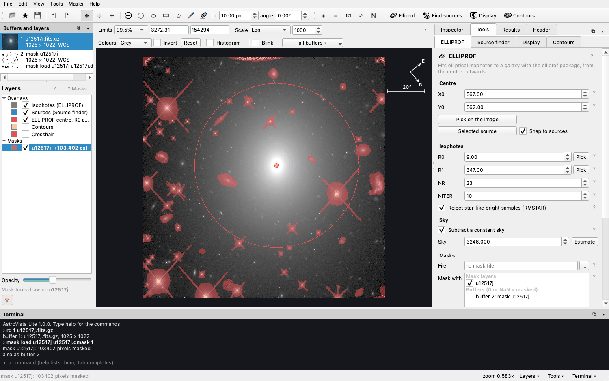
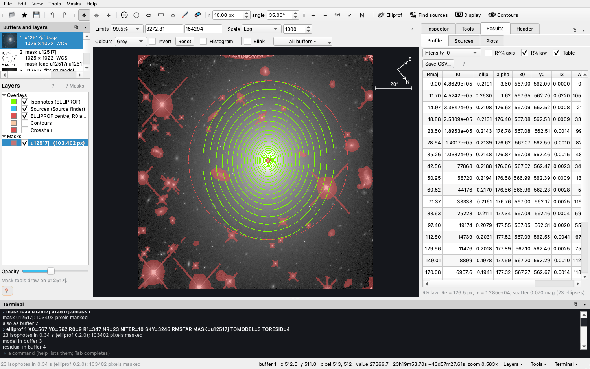

Tutorial
The light of a galaxy
In this lesson you measure how the light of a galaxy fades from its centre outwards, using a Hubble Space Telescope image of the galaxy UGC 12517. It takes about thirty minutes on your own, or one class period. You need no programming. Every step is done with the mouse, and every step is also written as a command you can keep.
- Open the image
- Look at the light
- Find the sources
- Find the centre and the size
- Mask what is not the galaxy
- Fit the isophotes
- Read the profile
- Look at what is left
- Keep and repeat the work
pip install AstroVista
and start it with astrovista (see Install).-
Open the image
Press Open the example on the welcome screen (or File ▸ Open example). The image goes into buffer 1; a buffer is a numbered slot that holds one image. The example also loads a mask,
u12517j, drawn in red over the bright stars and the detector's edges. Masked pixels are left out of every measurement.
Look at the terminal at the bottom: the two lines starting with
›are the commands that did this.rd 1 u12517j.fits.gzreads the image into buffer 1, andmask load …loads the mask. -
Look at the light
Move the mouse over the image. The status bar shows the pixel's value and its position on the sky (right ascension and declination). The galaxy's centre is tens of times brighter than its outskirts, so with a linear scale only the core shows.
In the bar above the image, change Scale to Log or Asinh, and tick Histogram. Drag on the image with the right mouse button to change the contrast. Try a colour map in Colours.

Log scale, viridis colours, and the histogram of pixel values. QuestionHow far out does the galaxy's light go? Compare the picture with Linear, Log and Asinh. Does the galaxy have an edge? -
Find the sources
Open Tools ▸ Source finder and press Find sources (or the button in the top bar). Each cyan ellipse is a star or a galaxy that was detected and measured. Click one to see its row in Results ▸ Sources, and click a column header to sort the catalogue.

Open Results ▸ Plots and plot
FLUX_RADIUS(the radius holding half the light) againstMAG_AUTO(the magnitude). QuestionStars are points: the telescope makes them all the same size, whatever their brightness. Which sources in the plot are stars? Why do the faintest sources all look small?
QuestionStars are points: the telescope makes them all the same size, whatever their brightness. Which sources in the plot are stars? Why do the faintest sources all look small? -
Find the centre and the size
Open Tools ▸ ELLIPROF. Press Pick on the image and click the galaxy's bright core. With Snap to sources ticked, the small red cross jumps to the centre the source finder measured. Then press Pick beside R1 and click where the galaxy fades into the sky. The dashed red circle shows R1, the largest ellipse to fit.
The example already holds the values of the published fit: X0 = 567, Y0 = 562, R0 = 9, R1 = 347 pixels, 23 ellipses, and a sky level of 3246 subtracted. Press Estimate beside Sky to measure the sky yourself.
QuestionThe pixels are 0.128″ wide. How large is R1 in arcseconds? The compass shows which way is north. Is the galaxy round, or stretched in one direction? -
Mask what is not the galaxy
Other stars and galaxies would add light that does not belong to UGC 12517. Press Mask the found sources in the ELLIPROF tool: every source except the galaxy itself goes into a new mask layer called
sources.Touch it up by hand with the tools in the top bar: circle, ellipse, box, polygon, brush, eraser. An ellipse, box or polygon waits in magenta until you apply it. Drag it to move it, drag its squares to resize it, and turn it with the round handle or
[]. Press Enter to apply it, or Esc to cancel. Hold Alt or Shift to unmask. Ctrl+Z undoes.
A shape waiting to be applied: drag to move, squares to resize, the round handle to turn. The layers on the left list every mask in its own colour. Untick one to hide it, and tick the masks to use under Mask with in the ELLIPROF tool.
-
Fit the isophotes
Press Fit isophotes (Ctrl+E). An isophote is a line of equal brightness, like a contour on a map. ELLIPROF fits an ellipse to each one, from R0 outwards, measuring its brightness, centre, ellipticity and orientation.

23 isophotes, from 9 to 347 pixels. The model and residual images go into buffers 3 and 4. The terminal shows the command that ran:
elliprof 1 X0=567 Y0=562 R0=9 R1=347 NR=23 NITER=10 SKY=3246 RMSTAR MASK=u12517j TOMODEL=3 TORESID=4QuestionDo the ellipses keep the same shape and orientation from the centre to the outskirts? What could make them twist? -
Read the profile
Open Results ▸ Profile. It plots the brightness of each isophote against its radius. Choose other quantities in the list: the ellipticity, the position angle, the centre, and the cos 3θ and cos 4θ terms, which show whether isophotes are boxy or discy.
Tick R¼ axis. Many elliptical galaxies follow de Vaucouleurs' law, a straight line when the log of the intensity is plotted against R¼. Tick R¼ law to fit it. The fit gives the effective radius Re, which holds half the light, and the scatter about the law.

For UGC 12517, Re ≈ 126.5 pixels with a scatter of only 0.07 mag. Tick Table to see the numbers. Save CSV… writes the table and Save PNG… writes the plot as a figure.

QuestionRe is 126.5 pixels of 0.128″. What is it in arcseconds? If the galaxy is 60 Mpc away, how many kiloparsecs is that? (1″ at 1 Mpc ≈ 4.85 pc.) -
Look at what is left
Click the residual buffer on the left: the image minus the model made of the fitted ellipses. A perfect model would leave only noise. Tick Blink above the image, click the image, and press ← and → to switch between the image, the model and the residual.
 QuestionWhat does the model miss? Look for dust, a disc, rings, shells or companions hidden in the galaxy's glow. Try
QuestionWhat does the model miss? Look for dust, a disc, rings, shells or companions hidden in the galaxy's glow. Try[9] = div([1] - [3], [3], 0)in the terminal: the residual as a fraction of the model. -
Keep and repeat the work
Every step you took is a command in the terminal. File ▸ Save the commands writes them to a file, and File ▸ Run a command file (or
astrovista --run session.txt) repeats the whole measurement. This is how the example in the repository is written:rd 1 u12517j.fits mask load u12517j u12517j.dmask 1 # the published mask (0 = masked) sources 1 # find the sources mask new sources 1 mask sources sources SCALE=1.5 # every other source, 1.5 Kron ellipses elliprof 1 X0=567 Y0=562 R0=9 R1=347 NR=23 NITER=10 SKY=3246 RMSTAR MASK=u12517j TOMODEL=3 TORESID=4
For a class
Exercises
- Does masking matter? Fit once with only the
u12517jmask, and once withsourcesticked too. Save both profiles as CSV and compare the outer points. Where do they differ, and why? - The sky. Change the sky by ±1% and fit again. Which part of the profile changes most? What does this say about measuring the faint outskirts of galaxies?
- Stars and galaxies. In Results ▸ Plots, find the stellar sequence. Use Masks ▸
Mask the sources where… with a condition such as
FLUX_RADIUS < 2.5to mask only the stars. - Shape. Plot the ellipticity and the position angle against the radius. Is UGC 12517 rounder in the centre or in the outskirts?
- Arithmetic. Make an image of only the bright pixels with
[5] = where([1] > 10000, [1], nan). What fraction of the image is brighter than 10000? (Hint:stats 5.) - Your own galaxy. Download a FITS image of a nearby elliptical galaxy from an archive (HST, Legacy Survey, SDSS), open it with File ▸ Open, and repeat the lesson.
The same lesson is in the program: Help ▸ Documentation ▸ A first lesson. Teachers can hand out a command file so every student starts from the same place.
For astronomers
Using it in research
- Reproducible: a session is a plain text file of commands, so it can go into a paper's repository next to the data.
- Standard names: the source finder keeps SExtractor's keywords
(
DETECT_THRESH,MAG_AUTO,FLUX_RADIUS, …) and writes the segmentation image too. - Coordinates: X0, Y0 and the mask commands use ELLIPROF's convention, in which the first pixel spans 0 to 1. The status bar also shows the FITS pixel (from 1) and the sky position.
- Files: FITS is recognised by content, whatever the file is called;
name.fits[sci]or[sci,2]picks an extension. Masks can be FITS or legacy.dmaskfiles, with 0 = masked. - Output: CSV tables with aligned columns, PNG figures, DS9 regions, and every buffer as FITS.
Please cite the repository and the underlying tools: see Citing.
Glossary
Words used
| Word | Meaning |
|---|---|
| Buffer | A numbered slot holding one image: [1], [2], … |
| Mask | Pixels left out of a measurement; in files, 0 = masked and 1 = good. |
| Isophote | A line of equal brightness on the image. |
| R0, R1 | The semi-major axes of the first and last ellipse fitted. |
| Ellipticity | 1 − b/a: 0 for a circle, approaching 1 for a thin ellipse. |
| Position angle | The orientation of an ellipse's long axis. |
| Sky | The background level that the galaxy sits on, subtracted before the fit. |
| Model, residual | The galaxy rebuilt from its ellipses; the image minus the model. |
| Re | The effective radius, within which half the light lies. |
| Magnitude | A logarithmic brightness: 5 magnitudes is a factor of 100, and brighter is smaller. |
| WCS | The World Coordinate System: how pixels map to positions on the sky. |